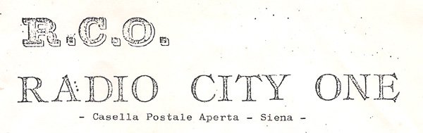
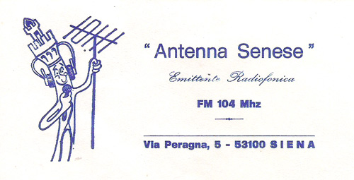
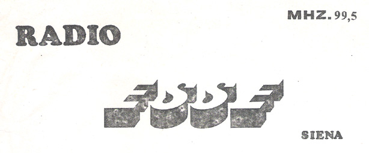
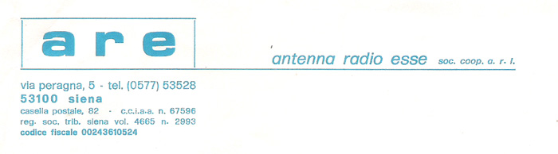
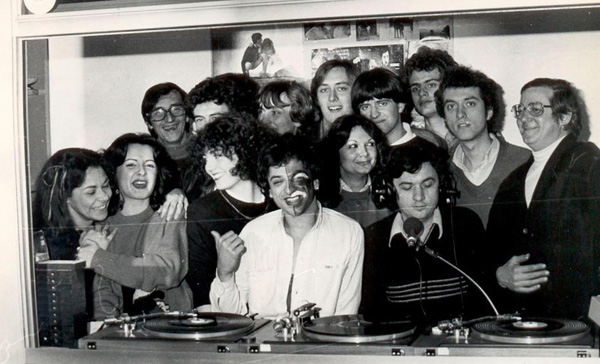
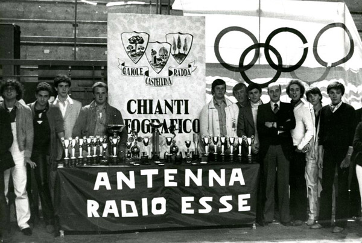

|
| |
Il 3 novembre 1977 veniva fondata Antenna Radio Esse, storica emittente radiofonica senese, una delle più ascoltate a Siena e provincia, ed una delle poche radio a carattere locale ancora esistente, fra le numerosissime che in quegli anni avevano iniziato le trasmissioni.
In realtà, le prime radio “private” avevano iniziato le trasmissioni a Siena già nell’anno precedente, approfittando delle mutate norme legali che non riservavano più il monopolio delle trasmissioni via etere alla RAI, ma si trattava essenzialmente di iniziative che si potrebbero definire a carattere pionieristico o personale, di gruppi di giovani appassionati di elettronica, di musica o di sport.

Erano radio nate quindi per il divertimento stesso di chi in esse operava, assimilabili in un certo qual modo a circoli ricreativi, ma nel giro di pochi mesi fu chiaro, in un crescendo di nuove radio sempre più numerose e di costi di gestione che cominciavano a lievitare, per i locali e per gli impianti, con l’inizio di una certa concorrenza e la necessità di essere competitivi, che le radio avrebbero avuto bisogno di personalità giuridica, se non altro per poter emettere fattura e coprire le spese con la pubblicità, che allora era facile trovare, non rivolgendosi alle grandi aziende, ma anche ai negozi.
Fu così che nel pomeriggio del 3 novembre 1977 si ritrovarono dal notaio sette giovani che facevano la radio ed alcuni genitori di ragazzi minori che pure frequentavano quell’ambiente, e costituirono la Antenna Radio Esse Società Cooperativa di Produzione e Lavoro a Responsabilità Limitata, fondendo le esperienze di due precedenti radio, Antenna Senese e Radio Esse, il che spiega anche il nome.
 
Il primo presidente della Cooperativa fu Gianfranco Gonnelli, uno dei genitori, che in radio non si vedeva molto, ma garantiva un certo apporto di “esperienza”; dopo qualche anno subentrò Giovanni Jannaccone, che della Radio era fra i fondatori e che fu sempre riconfermato nella carica fino alla sua prematura scomparsa nel dicembre 2019.
La prima sede fu in via Peragna, cui seguirono Via Fiorentina, poi Viale Vittorio Veneto ed infine l’attuale in comune di Monteriggioni, in località Badesse. La forma societaria fu scelta per tutelare l’attività dei singoli soci, il cui numero crebbe nel tempo fino a sfiorare i cento, che perseguivano lo scopo sociale di fare radio, musica, intrattenimento, dirette degli avvenimenti sportivi, informazione, per il piacere del pubblico ed il proprio, senza fini di lucro, cioè senza la pretesa di una retribuzione od almeno di una retribuzione congruente al lavoro svolto.

È da ricordare anche che le radio furono da subito equiparate ai giornali quotidiani (come tale Antenna Radio Esse è regolarmente iscritta nell’apposito registro presso il Tribunale di Siena dal 1977), e che presso questa hanno prestato opera alcuni noti nomi del giornalismo senese passato e presente; si ricordino almeno il primo direttore Guido Valigi, e poi ancora Stefano Bisi, Sergio Profeti, Sonia Maggi, Cristiana Mastacchi, Sara Corti.
Bisognerebbe anche ricordare i nomi di coloro che si sono occupati di sport e di palio, e dei DJ che hanno condotto le trasmissioni musicali, a partire dalle intramontabili “dediche” tanto amate alla fine degli anni Settanta, ma questi nomi sono troppi, e per non offendere nessuno li taciamo.

Con il passare degli anni, molti hanno utilizzato la Radio anche come esperienza e trampolino di lancio verso il mondo del lavoro, con ottimi riscontri, ma alla fine le cose sono cambiate. I giovani di allora sono diventati grandi, ed alcuni ormai anziani, e gli impegni di famiglia e di lavoro hanno impedito che potessero continuare a dedicarsi alla radio come una volta, mentre nuovi giovani con entusiasmo ce ne sono pochi, e quei pochi, semplicemente, vogliono uno stipendio. Stipendio che con la crisi economica del paese una radio locale non riesce a dare (ed a Siena, con l’ulteriore crisi delle istituzioni locali tipo Monte dei Paschi e Mens Sana, men che mai).

Anche la smodata burocratizzazione tipica del nostro paese e la necessità di ottenere una concessione ministeriale per poter trasmettere hanno dato un’ulteriore spinta, e la maggior parte delle radio locali ha finito con il chiudere o con l’essere assorbita, lasciando lo spazio ai network su base nazionale od almeno regionale.
Sono ben poche quelle che come Antenna Radio Esse ancora oggi esistono, nel caso in esame più per la caparbietà e l’impegno dei pochi soci rimasti che altro. Il segnale è ben ricevibile a Siena ed in gran parte della provincia (tranne alcune zone nel sud), in parte del Grossetano, ed in DAB nel nord della regione. Purtroppo mantenere in attività una Società che incassa sempre di meno significa essere pronti a tagliare (con dispiacere e rimpianto) tutti quei rami aziendali il cui costo è maggiore della redditività: negli anni è diminuito il numero delle frequenze e degli impianti di ripetizione del segnale, e sono diminuite le dirette degli avvenimenti sportivi e l’informazione a carattere locale.
Infine pure l’emergenza Covid-19 ha giocato un ruolo notevole nella crisi, e purtroppo sulle cifre del bilancio non si può scherzare.
Gli attuali amministratori di Antenna Radio Esse, che poi sono gli stessi che da anni l’hanno gestita e le hanno consentito di continuare ad esistere, sostengono che è necessaria una riorganizzazione generale di riallineamento alla mutata situazione, alla quale stanno già lavorando ma sui cui tempi non si possono fare previsioni. Ci auguriamo che abbiano ragione e che riescano nel loro intento, per poter continuare a festeggiare ogni 3 novembre il compleanno di quella che è diventata una delle istituzioni della città.
|

 ACCADDE OGGI
ACCADDE OGGI